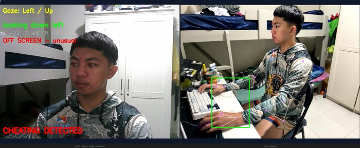
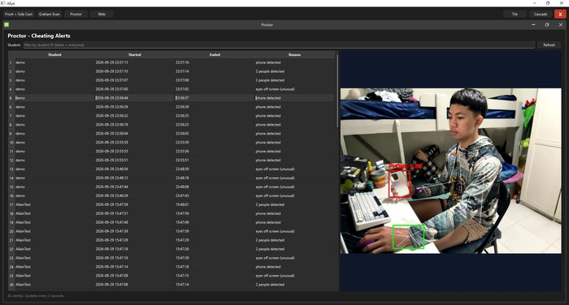

AEye
Undergraduate thesis


- Team
- Team of 3
- Date
- July 2026 - present
- Built with
- Python, PySide6, OpenCV, MediaPipe, YOLOv8, scikit-learn, MySQL
- Code
- View on GitHub
A Windows desktop app that proctors computer-based exams. It reads eye gaze, head pose and posture from two cameras, compares them to each student's own baseline, and sends real-time alerts to a human proctor, who makes the final call.
My part
- Side-camera module. Worked on upper-body posture and hand tracking with MediaPipe, and phone and extra-person detection with YOLOv8.
- Per-student calibration. Worked on mapping each student's screen area with a convex hull (Graham scan).
- Evidence logging. Worked on logging each confirmed incident with start and end times and screenshots, plus a live gaze and head-pose graph.